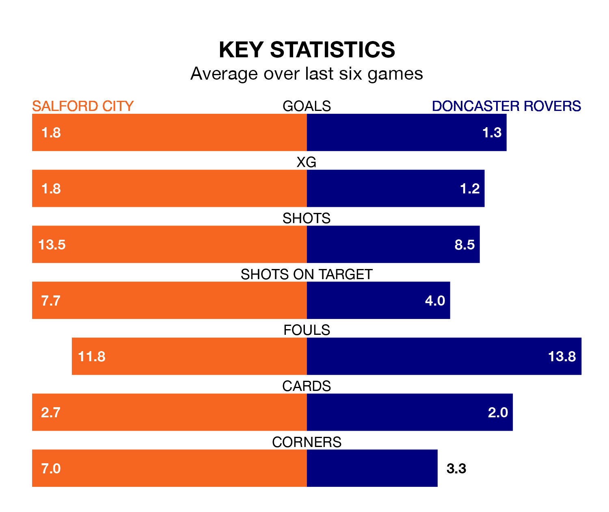

Salford City face Doncaster Rovers on Tuesday seeking to protect their long unbeaten run in EFL League Two.
The Ammies are unbeaten in six, with three wins and three draws, ahead of the 7.45pm kick-off.
They face a Doncaster team who have won two and drawn one over the same number of games.
In Matt Smith, Salford have one of the league's most on-form strikers so far this season. He has notched 19 goals in 31 appearances, to sit second in the scoring charts.
His goal rate of one every 133 minutes is quicker than that of Joe Ironside, Doncaster's top scorer with a goal every 192 minutes, and a total of 13 goals in 30 games.
Rovers are 20th in the table after 30 games, of which they have won nine and drawn five, earning 32 points.
City are one place ahead of the Rovers in 19th, with nine wins and eight draws putting them on 35 points.
With 35 goals in 30 games so far this season, the away team are scoring at below the league average rate with 1.2 goals per game. And they are conceding more than average, letting in 54 goals at a rate of 1.8 per game.
The Ammies are also below average scorers, with 1.4 goals per game, compared to a league average of 1.5. They have conceded 1.7 goals per game.
In the last three years, Salford and Doncaster have played each other on three occasions. Salford won two of them and Doncaster one.
Their last meeting was on October 24, when Salford won 3-0 away.
Salford's last match was on Saturday, a 1-1 draw against Swindon Town, with Callum Hendry getting the goal for the Ammies.
Doncaster beat Tranmere Rovers 2-1 last time out, also on Saturday, with Hakeem Adelakun and Ironside on the scoresheet.
Tuesday's match will be refereed by Martin Woods, who has taken charge of seven EFL League Two games so far this season, issuing one red card and booking 22 players. He has awarded two penalties.
The last Doncaster game Woods refereed was the 2-0 win at home against Crawley Town on October 3. He is yet to oversee a match featuring Salford this season.
Updated: 09:02 (UTC), 13/02/24